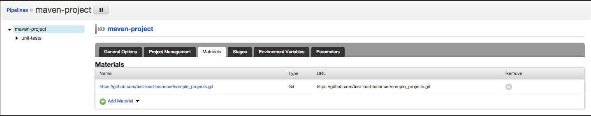
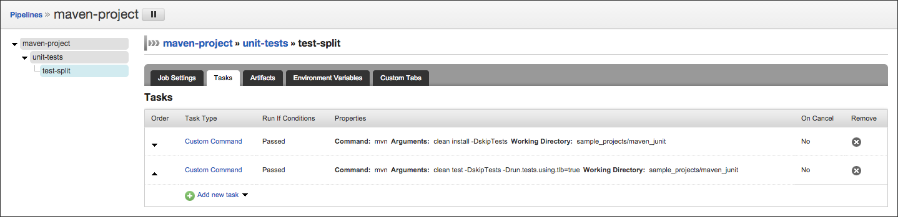
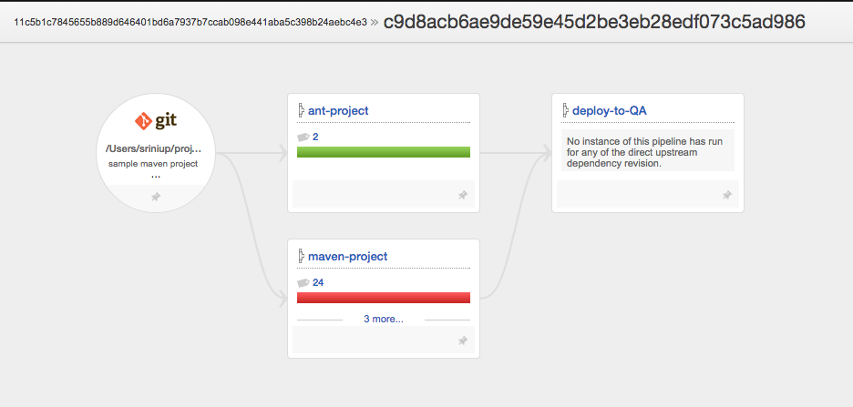
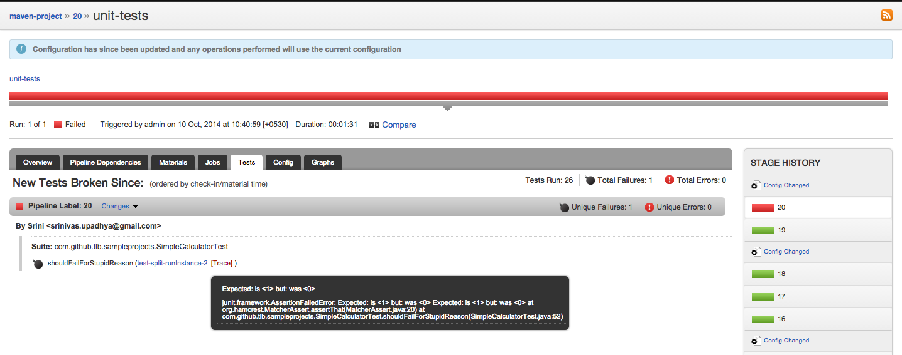
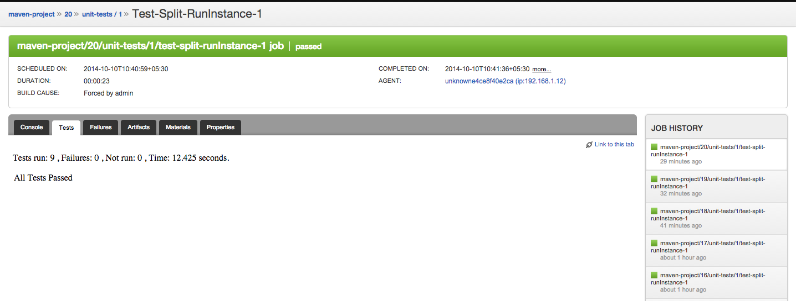
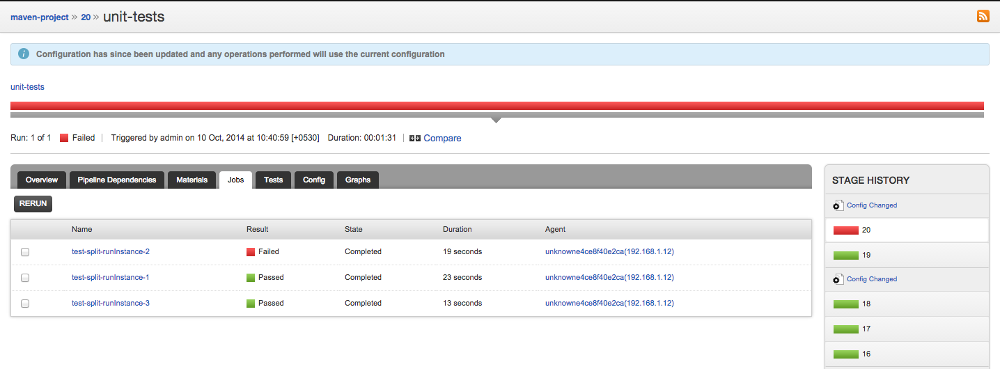
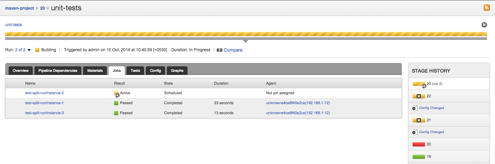

Writing tests has finally become the norm. Consequently, running tests for every commit is central to & the most time consuming activity in any CI/CD setup. In a decent-sized production quality project you tend to have thousands of tests. That means the cycle time, i.e. the time it takes for a commit to reach deployable state (after running all unit, integration & functional tests), keeps growing.
It gets harder when teams follow XP related practices like "small commits, frequent commits" since it causes parallel builds & resource starvation.
One such example is GoCD's codebase. Just the "Common" & "Server" components of GoCD which comprises of unit & integration tests, together has ~6000 tests which will take about ~5 hours if run serially! The functional test suite is about 260+ tests with combined runtime of ~15 hours. That's close to a day & we haven't even run everything for a single commit!
Note that the number of tests is so huge that just putting in a powerful box & running test in parallel will not bring it down to acceptable limits. Also, a large number of other problems surface if you start running tests in parallel on same box (without sandboxed environment) like concurrency issues etc.
Solution [GoCD + TLB]
GoCD improves the cycle time of its own build by making test execution faster, distributing it across many agents (machines). After this "Common" + "Server" takes 20 minutes. All functional tests run in 45 minutes. Thats close to an hour! Still not ideal (a few minutes - constrained by resource availability), but better. :)
Test Load Balancer (TLB)
TLB is an open-source library which provides the ability to break up a test suite into pieces and run a part. It guarantees 'Mutual Exclusion' & 'Collective Exhaustion' properties that are essential to reliably running tests in distributed fashion.
TLB's strength lies in intelligent test distribution which is based on time, i.e. the tests will be distributed based on time they take to execute, making the jobs close to equal runs which leads to better resource utilization. It falls back on count based splitting if test times are not available. It also runs tests in 'Failed First' order, so if a test has failed in previous run it will be run before other tests which means faster feedback.
Note: As of this writing, TLB integrates with JUnit (through Ant, Maven & Buildr), RSpec (through Rake), Cucumber (through Rake), Twist (through Ant & Buildr).
Quick Setup
Download TLB
Unzip tlb-complete-0.3.2.tar.gz to tlb-complete-0.3.2:
$ cd tlb-complete-0.3.2/server
$ chmod +x server.sh
$ ./server.sh start
This should start server at http://host-ip-address:7019
Resources:
GoCD
GoCD is an open-source CI/CD tool. Its well known for its powerful modelling, tracing & visualization capabilities.
While TLB is doing all the distribution, GoCD does what it does best - orchestrate the parallel execution.
Run 'X' instances
Starting release 14.3 you can spawn 'x' instances of a job. So if you want to distribute your tests across 10 machines you just need to set run instance count to 10 & GoCD will spawn 10 instances of the job when scheduling.
Sample Configuration
Setup a pipeline with material (SCM) that contains your tests.

Setup Job to spawn required number of instances (run instance count).

Setup TLB related environment variables at Environment / Pipeline / Stage / Job level.

Setup the task to consume GO_PIPELINE_NAME, GO_STAGE_NAME, GO_PIPELINE_COUNTER, GO_STAGE_COUNTER, GO_JOB_RUN_INDEX & GO_JOB_RUN_COUNT environment variables that GoCD exposes.

Upload junit xmls as test artifacts.

Sample Pipeline Configuration
<pipeline name="maven-project">
<materials>
<git url="https://github.com/test-load-balancer/sample_projects.git" dest="sample_projects" />
</materials>
<stage name="unit-tests">
<jobs>
<job name="test-split" runInstanceCount="3">
<environmentvariables>
<variable name="TLB_BASE_URL">
<value>http://localhost:7019</value>
</variable>
<variable name="TLB_TMP_DIR">
<value>/tmp</value>
</variable>
<variable name="TLB_JOB_NAME">
<value>${GO_PIPELINE_NAME}-${GO_STAGE_NAME}-test-split</value>
</variable>
<variable name="TLB_JOB_VERSION">
<value>${GO_PIPELINE_COUNTER}-${GO_STAGE_COUNTER}</value>
</variable>
<variable name="TLB_PARTITION_NUMBER">
<value>${GO_JOB_RUN_INDEX}</value>
</variable>
<variable name="TLB_TOTAL_PARTITIONS">
<value>${GO_JOB_RUN_COUNT}</value>
</variable>
</environmentvariables>
<tasks>
<exec command="mvn" workingdir="sample_projects/maven_junit">
<arg>clean</arg>
<arg>install</arg>
<arg>-DskipTests</arg>
<runif status="passed" />
</exec>
<exec command="mvn" workingdir="sample_projects/maven_junit">
<arg>clean</arg>
<arg>test</arg>
<arg>-DskipTests</arg>
<arg>-Drun.tests.using.tlb=true</arg>
<runif status="passed" />
</exec>
</tasks>
<artifacts>
<test src="sample_projects/maven_junit/target/reports/*.xml" dest="test-reports" />
</artifacts>
</job>
</jobs>
</stage>
</pipeline>
Other features that helps with Test Parallelization
Wait for all jobs to finish
GoCD's modeling capability gives it the ability to run jobs in parallel but wait for all of them to finish before the next Stage / downstream Pipelines are triggered.

Stop the downstream flow
If any of the tests (and as a result the Job running the test) fails, the Stage is considered as failed. This causes the flow to stop as expected.

Consolidated Test Report
Once all the Jobs are done running, GoCD consolidates test reports & shows the result at stage level for easy consumption.

Drill down
You can drill down at job level to know more information like 'test count', 'console output' for the Job (test) etc.



Partition re-run
GoCD also provides ability to re-run a Job of a stage. This provides ability to run the partition that could have failed due to flaky test etc. The best part is, TLB runs the exact tests that it ran the last time making sure no test is missed out!
 
TLB Correctness Check
TLB provides an ability to check correctness, i.e. it will make sure all tests were run. You can configure to run this correctness check once all partitions are done executing, may be in next stage / pipeline.
Power of dynamic splitting
GoCD's one knob control to amount of parallelization means that when the number of tests increase/decrease all you will need to do is change the run instance count based on number of tests & resource availability & you are done!
–
As always, GoCD questions can be asked at go-cd.